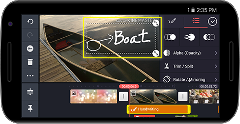
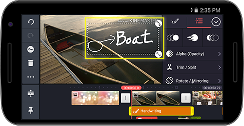

打開媒體瀏覽器（視訊），選擇所需的視訊新增為層。
打開媒體瀏覽器（視訊），選擇所需的視訊新增為層。點擊 ，然後點擊打開媒體瀏覽器（視訊），選擇所需的視訊新增為層。
，然後點擊打開媒體瀏覽器（視訊），選擇所需的視訊新增為層。


點擊 ，然後點擊打開媒體瀏覽器（圖像），選擇所需的圖像新增為層。
，然後點擊打開媒體瀏覽器（圖像），選擇所需的圖像新增為層。


點擊 ，然後點擊
，然後點擊 選擇要添加的貼紙。
選擇要添加的貼紙。


點擊 ，然後點擊
，然後點擊 輸入要添加到圖層的文字。
輸入要添加到圖層的文字。


點擊 ，然後點擊在圖層中書寫想要的內容。
，然後點擊在圖層中書寫想要的內容。
 
使用 建立圖層之後，點擊
建立圖層之後，點擊 選項卡並設定所需的選項。
選項卡並設定所需的選項。